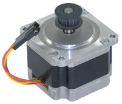
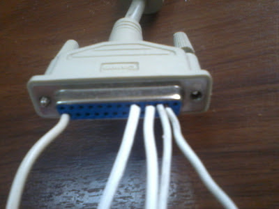
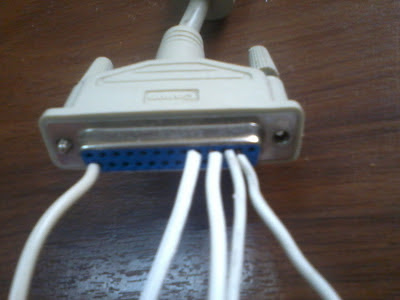

Esta vez vamos a jugar un poco con hardware, específicamente lo que haremos será mover un motor PAP (paso a paso) a través de la PC haciendo uso únicamente de transistores y sin usar ningún circuito integrado.
Para empezar es conveniente documentarse un poco del funcionamiento de este tipo de motores: http://es.wikipedia.org/wiki/Motor_paso_a_paso
Sabemos que para hacer girar un motor PAP Bipolar tenemos que dar pulsos secuenciales en sus 4 cables (Que llamaremos A, B, C y D), pero alternando la polaridad, por lo que la circuito necesario se complica un poco, mientras que para los Unipolares este problema desaparece, así que empezaremos por jugar con los motores PAP Unipolares.
Unipolares
Esquema de conexión en el puerto paralelo:
Me parece que es bastante evidente, pero vale aclarar que los pines del esquema son los correspondientes del puerto paralelo, y que estamos usando el nibble bajo del byte del puerto; además se puede ver como los 2 cables comunes del motor unipolar se conectan al positivo de la fuente de alimentación, la cual corresponde con la tensión que requiere nuestro motor (en mi caso 9V), y los cables A,B,C y D serán conectados al negativo de la fuente al saturarse los transistores con la señal del puerto.
Aquí se puede apreciar de color Rojo los 8 pines de datos del puerto, de los cuales hemos usado 4 (del pin 2 al 5) es decir 4 bits.
Aquí se pude observar el circuito que yo he montado y he usado un cable de puerto paralelo de una vieja impresora.

 

Código
Con el circuito montado lo que necesitamos ahora es el código que saque las señales correctas en el orden correcto por el puerto paralelo para mover nuestro motor, y tomando en cuenta también los distintos modos a los que puede trabajar el motor (Simple Step, Double Step, Half Step).
Secuencias
- Simple Step:
A-B-C-D - Double Step:
AB-BC-CD-DA - Half Step:
A-AB-B-BC-C-CD-D-DA
El código no pretende ser un ejemplo de elegancia ni mucho menos, pero funciona. Es solamente una clase la cual usaremos con otro código para controlar el motor.
/*
* =====================================================================================
*
* Filename: unipolar.cpp
*
* Description: Clase para mover un motor PAP Unipolar por puerto paralelo
*
* Version: 1.0
* Created: 09/28/12 11:44:21
* Revision: none
* Compiler: g++
* License: GPLv3
*
* Author: Daniel Campoverde Carrión
* Organization: Silly Bytes
*
* =====================================================================================
*/
#include <iostream>
#include <sys/io.h>
#include <unistd.h>
#define puerto (0x378) //Puede ser (0x278)
//datos sacados por el nibble bajo del puerto paralelo
//A,B,C,D son los cables del motor PAP
#define A 1
#define B 2
#define C 4
#define D 8
#define AB 3
#define BC 6
#define CD 12
#define DA 9
using namespace std;
class motor_unipolar{
public:
//steps=Numero de pasos del motor,type_step[0=simple,1=double.2=half]
motor_unipolar( int steps, int type_step=1);
int step( int steps = 1, int direction = 0, int rate_step = 25000); ///pasos a dar,direccion[0=horario,1=antihorario],tiempo entre paso y paso(microsegundos)
int rotate( int angle = 1, int direction = 0, int rate_step = 25000);///angulo a rotar (degrees),direccion[0=horario,1=antihorario],tiempo entre paso y paso(microsegundos)
void stop(){ outb(puerto,0);} //poner a 0 el puerto
private:
int motor_steps;
int step_type;
float angle_by_step;
int sequence[8];
int *current_step;
void single_step( int direction);
int forward_sequence();
void backward_sequence();
};
motor_unipolar::motor_unipolar( int steps, int type_step) : motor_steps(steps), step_type(type_step), angle_by_step(360/steps){
if(ioperm(puerto,1,1)){ //Abrir puerto y configurar permisos
cout << "Error de permisos" << endl << flush;
}
switch(step_type){
case 0:
sequence[0] = A; //Secuencia simple_step
sequence[1] = B;
sequence[2] = C;
sequence[3] = D;
sequence[4] = 0;
sequence[5] = 0;
sequence[6] = 0;
sequence[7] = 0;
break;
case 1:
sequence[0] = AB; //Secuencia double_step
sequence[1] = BC;
sequence[2] = CD;
sequence[3] = DA;
sequence[4] = 0;
sequence[5] = 0;
sequence[6] = 0;
sequence[7] = 0;
break;
case 2:
sequence[0] = A; //Secuencia half_step
sequence[1] = AB;
sequence[2] = B;
sequence[3] = BC;
sequence[4] = C;
sequence[5] = CD;
sequence[6] = D;
sequence[7] = DA;
break;
}
current_step = sequence;//colocamos el paso actual al principio de ka secuencia
}
int motor_unipolar::step( int steps, int direction, int rate_step){
while(steps > 0){
single_step(direction);
usleep(rate_step);
steps--;
cout << *current_step << endl << flush;
}
return 0;
}
int motor_unipolar::rotate( int angle, int direction, int rate_step){
int steps = int(angle/angle_by_step);
while(steps > 0){
single_step(direction);
usleep(rate_step);
steps--;
}
return 0;
}
int motor_unipolar::forward_sequence(){
if(current_step==&sequence[7] || *current_step == 0){ current_step = sequence; return 0;} //reiniciamos la secuencia
current_step++; //avanzamos en la secuencia
if(*current_step == 0){ current_step = sequence; return 0;}
return 0;
}
void motor_unipolar::backward_sequence(){
if(current_step==&sequence[0]) current_step = &sequence[7]; //reiniciamos la secuencia
current_step--; //avanzamos en la secuencia
if(*current_step==0) backward_sequence();
}
void motor_unipolar::single_step( int direction){
outb(*current_step,puerto);
if(direction==0){ forward_sequence();}
else{backward_sequence();}
}
int main(){
int opcion;
motor_unipolar motor(200);
int direccion;
int valor;
for(;;){
cout << "\n\n\nAngulo, Pasos, Salir[0,1,2]\n >> ";
cin >> opcion;
cout << "Valor (angulo o pasos)\n >> ";
cin >> valor;
cout << "Direccion[0,1]\n >> ";
cin >> direccion;
if(opcion==0){
cout << "Rotando..." << endl;
motor.rotate(valor,direccion);
}else if(opcion==1){
motor.step(valor,direccion);
cout << "Rotando..." << endl;
}else{ motor.stop(); return 0;}
}
}Bipolares
Esquema de conexión en el puerto paralelo:
Aquí he implementado 2 puentes H de transistores para controlar ambas bobinas del motor alternando las polaridades usando nuevamente 4 pines de los 8 del puerto
Código
En este caso el código es más simple puesto que en los motores PAP Bipolares no tenemos distintos modos de paso.
/*
* =====================================================================================
*
* Filename: bipolar.cpp
*
* Description: Clase para mover un motor PAP Bipolar por puerto paralelo
*
* Version: 1.0
* Created: 09/28/12 11:44:21
* Revision: none
* Compiler: g++
* License: GPLv3
*
* Author: Daniel Campoverde CarriÃn
* Organization: Silly Bytes
*
* =====================================================================================
*/
#include <iostream>
#include <sys/io.h>
#include <unistd.h>
#define puerto (0x378) //Puede ser (0x278)
//datos sacados por el nibble bajo del puerto paralelo
//A,B,C,D son los cables del motor PAP
#define A 1 //bobina 1 polaridad 1
#define B 2 //bobina 1 polaridad 2
#define C 4 //bobina 2 polaridad 1
#define D 8 //bobina 2 polaridad 2
using namespace std;
class motor_bipolar{
public:
//steps=Numero de pasos del motor
motor_bipolar( int steps);
int step( int steps = 1, int direction = 0, int rate_step = 25000); ///pasos a dar,direccion[0=horario,1=antihorario],tiempo entre paso y paso(microsegundos)
int rotate( int angle = 1, int direction = 0, int rate_step = 25000);///angulo a rotar (degrees),direccion[0=horario,1=antihorario],tiempo entre paso y paso(microsegundos)
private:
int motor_steps;
float angle_by_step;
int sequence[4] = {A,B,C,D};
int *current_step;
void single_step( int direction);
int forward_sequence();
void backward_sequence();
};
motor_bipolar::motor_bipolar( int steps) : motor_steps(steps), angle_by_step(360/steps), current_step(sequence){
if(ioperm(puerto,1,1)){ //Abrir puerto y configurar permisos
cout << "Error de permisos" << endl << flush;
}
}
int motor_bipolar::step( int steps, int direction, int rate_step){
while(steps > 0){
single_step(direction);
usleep(rate_step);
steps--;
}
return 0;
}
int motor_bipolar::rotate( int angle, int direction, int rate_step){
int steps = int(angle/angle_by_step);
while(steps > 0){
single_step(direction);
usleep(rate_step);
steps--;
}
return 0;
}
int motor_bipolar::forward_sequence(){
if(current_step==&sequence[4]){ current_step = sequence; return 0;} //reiniciamos la secuencia
current_step++; //avanzamos en la secuencia
return 0;
}
void motor_bipolar::backward_sequence(){
if(current_step==&sequence[0]) current_step = &sequence[4]; //reiniciamos la secuencia
current_step--; //avanzamos en la secuencia
}
void motor_bipolar::single_step( int direction){
outb(*current_step,puerto);
if(direction==0){ forward_sequence();}
else{backward_sequence();}
}Haciendo girar el motor
Ahora que tenemos las clases necesarias para mover el motor cuyo circuito ya tenemos montado en el puerto paralelo, usaremos un código que a su vez aproveche dichas clases para jugar con el motor.
Así que ha manera de ejemplo yo he agregado la función main() para el fuente de unipolar.cpp, quedando así:
/*
* =====================================================================================
*
* Filename: rotate.cpp
*
* Description: Ejemplo para mover un motor PAP Unipolar por puerto paralelo
*
* Version: 1.0
* Created: 09/29/12 16:39:05
* Revision: none
* Compiler: gcc
* License: GPLv3
*
* Author: Daniel Campoverde CarriÃn
* Organization: Silly Bytes
*
* =====================================================================================
*/
#include <iostream>
#include "unipolar.cpp"
using namespace std;
int main(int argc, char *argv[]){
bool angulo=false;
bool pasos=false;
motor_unipolar motor(200);
int direccion;
int valor;
if(argc < 4){ cout << "args"; return 1;}
for(int i = 0; i<argc; i++){
if(argv[i]=="-a"){ angulo=true; valor = int(argv[i+1]); }
if(argv[i]=="-p"){ pasos=true; valor = int(argv[i+1]); }
if(argv[i]=="-d"){
if(argv[i+1]=="IZQ") direccion = 1;
if(argv[i+1]=="DER") direccion = 0;
}
}
if(pasos){
motor.step(valor,direccion);
}else if(angulo){
motor.rotate(valor,direccion);
}
}Una vez compilado con g++ unipolar.cpp -o rotate, lo ejecutamos obteniendo este resultado: